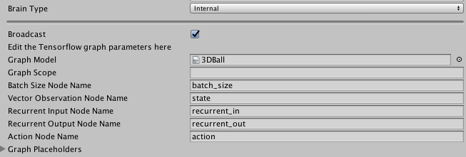

External and Internal Brains
The External and Internal types of Brains work in different phases of training. When training your agents, set their brain types to External; when using the trained models, set their brain types to Internal.
External Brain
When running an ML-Agents training algorithm, at least one Brain object in a scene must be set to External. This allows the training process to collect the observations of agents using that brain and give the agents their actions.
In addition to using an External brain for training using the ML-Agents learning algorithms, you can use an External brain to control agents in a Unity environment using an external Python program. See Python API for more information.
Unlike the other types, the External Brain has no properties to set in the Unity Inspector window.
Internal Brain
The Internal Brain type uses a TensorFlow model to make decisions. The Proximal Policy Optimization (PPO) and Behavioral Cloning algorithms included with the ML-Agents SDK produce trained TensorFlow models that you can use with the Internal Brain type.
A model is a mathematical relationship mapping an agent's observations to its actions. TensorFlow is a software library for performing numerical computation through data flow graphs. A TensorFlow model, then, defines the mathematical relationship between your agent's observations and its actions using a TensorFlow data flow graph.
Creating a graph model
The training algorithms included in the ML-Agents SDK produce TensorFlow graph models as the end result of the training process. See Training ML-Agents for instructions on how to train a model.
Using a graph model
To use a graph model:
- Select the Brain GameObject in the Hierarchy window of the Unity Editor. (The Brain GameObject must be a child of the Academy GameObject and must have a Brain component.)
Set the Brain Type to Internal.
Note: In order to see the Internal Brain Type option, you must enable TensorFlowSharp.
Import the
environment_run-id.bytesfile produced by the PPO training program. (Whereenvironment_run-idis the name of the model file, which is constructed from the name of your Unity environment executable and the run-id value you assigned when running the training process.)You can import assets into Unity in various ways. The easiest way is to simply drag the file into the Project window and drop it into an appropriate folder.
Once the
environment.bytesfile is imported, drag it from the Project window to the Graph Model field of the Brain component.
If you are using a model produced by the ML-Agents learn.py program, use the default values for the other Internal Brain parameters.
Internal Brain properties
The default values of the TensorFlow graph parameters work with the model produced by the PPO and BC training code in the ML-Agents SDK. To use a default ML-Agents model, the only parameter that you need to set is the Graph Model, which must be set to the .bytes file containing the trained model itself.

Graph Model: This must be thebytesfile corresponding to the pre-trained TensorFlow graph. (You must first drag this file into your Resources folder and then from the Resources folder into the inspector)
Only change the following Internal Brain properties if you have created your own TensorFlow model and are not using an ML-Agents model:
Graph Scope: If you set a scope while training your TensorFlow model, all your placeholder name will have a prefix. You must specify that prefix here. Note that if more than one Brain were set to external during training, you must give aGraph Scopeto the internal Brain corresponding to the name of the Brain GameObject.Batch Size Node Name: If the batch size is one of the inputs of your graph, you must specify the name if the placeholder here. The brain will make the batch size equal to the number of agents connected to the brain automatically.State Node Name: If your graph uses the state as an input, you must specify the name of the placeholder here.Recurrent Input Node Name: If your graph uses a recurrent input / memory as input and outputs new recurrent input / memory, you must specify the name if the input placeholder here.Recurrent Output Node Name: If your graph uses a recurrent input / memory as input and outputs new recurrent input / memory, you must specify the name if the output placeholder here.Observation Placeholder Name: If your graph uses observations as input, you must specify it here. Note that the number of observations is equal to the length ofCamera Resolutionsin the brain parameters.Action Node Name: Specify the name of the placeholder corresponding to the actions of the brain in your graph. If the action space type is continuous, the output must be a one dimensional tensor of float of lengthAction Space Size, if the action space type is discrete, the output must be a one dimensional tensor of int of length 1.Graph Placeholder: If your graph takes additional inputs that are fixed (example: noise level) you can specify them here. Note that in your graph, these must correspond to one dimensional tensors of int or float of size 1.Name: Corresponds to the name of the placeholder.Value Type: Either Integer or Floating Point.Min ValueandMax Value: Specify the range of the value here. The value will be sampled from the uniform distribution ranging fromMin ValuetoMax Valueinclusive.